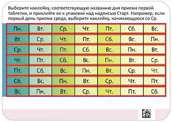
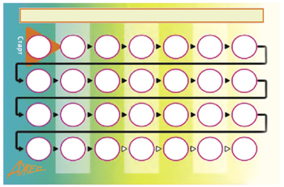
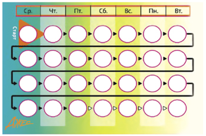
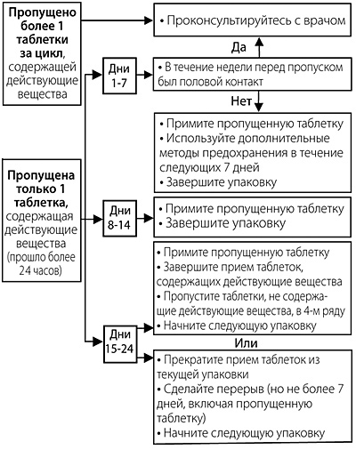

|
 |
| ДЖЕС® (YAZ®) drospirenone, ethinylestradiol таб., покр. пленочной оболочкой | ||||||||||||||||||||||||||||||||||||||||||||||||||||||||||||||||||||||||||||||||||||||||||||||||||||||||||||||||||||||||||||||||||||||
|
Клинико-фармакологическая группа: Контрацептивный комбинированный препарат (эстроген+гестаген) Номер и дата регистрации: ЛСР-008842/08 от 10.11.08 Код ATX: G03AA12 |
Владелец регистрационного удостоверения: зарегистрировано Представительство: | |||||||||||||||||||||||||||||||||||||||||||||||||||||||||||||||||||||||||||||||||||||||||||||||||||||||||||||||||||||||||||||||||||||
Форма выпуска, состав и упаковка Таблетки, покрытые пленочной оболочкой (с действующими веществами) светло-розового цвета, круглые, двояковыпуклые; на одной стороне таблетки в правильном шестиграннике выгравировано "DS"; (24 шт. в блистере).
Вспомогательные вещества: лактозы моногидрат - 48.18 мг, крахмал кукурузный - 28 мг, магния стеарат - 0.8 мг. Состав оболочки: лак розовый - 3 мг или альтернативно: гипромеллоза 5 cP - 1.5168 мг, тальк - 0.3036 мг, титана диоксид - 1.1748 мг, краситель железа оксид красный - 0.0048 мг. Таблетки, покрытые пленочной оболочкой (плацебо) белого цвета, круглые, двояковыпуклые; на одной стороне таблетки в правильном шестиграннике выгравировано "DP"; (4 шт. в блистере). Вспомогательные вещества: лактозы моногидрат - 23.205 мг, целлюлоза микрокристаллическая - 54.21 мг, магния стеарат - 0.585 мг. Состав оболочки: гипромеллоза 5 cP - 1.01 мг, тальк - 0.2 мг, титана диоксид - 0.79 мг. 28 шт. (24 активные таблетки и 4 таблетки плацебо) - блистеры (1) - книжки-раскладушки (1) в комплекте с самоклеящимся календарем приема - пленка×. × На прозрачную пленку наносится упаковочный стикер. | ||||||||||||||||||||||||||||||||||||||||||||||||||||||||||||||||||||||||||||||||||||||||||||||||||||||||||||||||||||||||||||||||||||||
| ||||||||||||||||||||||||||||||||||||||||||||||||||||||||||||||||||||||||||||||||||||||||||||||||||||||||||||||||||||||||||||||||||||||
Описание препарата основано на официально утвержденной инструкции по применению и утверждено компанией-производителем для издания 2023 г. | ||||||||||||||||||||||||||||||||||||||||||||||||||||||||||||||||||||||||||||||||||||||||||||||||||||||||||||||||||||||||||||||||||||||
Фармакологическое действие |
Фармакокинетика |
Показания |
Режим дозирования |
Побочное действие |
Противопоказания |
Беременность и лактация |
Особые указания |
Передозировка |
Лекарственное взаимодействие |
Условия хранения и сроки годности |
Условия реализации
Фармакологическое действие
Джес® - комбинированный гормональный контрацептивный препарат с антиминералокортикоидным и антиандрогенным действием. Контрацептивный эффект комбинированных пероральных контрацептивов (КОК) основан на взаимодействии различных факторов, наиболее важными из которых являются подавление овуляции и изменения в эндометрии. При правильном применении индекс Перля (число беременностей на 100 женщин в год) составляет менее 1. При пропуске таблеток или неправильном применении индекс Перля может возрастать. У женщин, принимающих КОК, менструальный цикл становится более регулярным, реже наблюдаются болезненные менструации, уменьшается интенсивность и продолжительность кровотечения, что снижает риск развития анемии. Применение КОК с более высокой дозой эстрогена (50 мкг этинилэстрадиола) снижает риск развития рака эндометрия и яичников, неизвестно, относится ли это также и к низкодозированным КОК. Дроспиренон, содержащийся в препарате Джес®, обладает антиминералокортикоидным действием. Предупреждает увеличение массы тела и появление отеков, связанных с вызываемой эстрогенами задержкой жидкости, что обеспечивает хорошую переносимость препарата. Дроспиренон оказывает положительное воздействие на предменструальный синдром (ПМС). Показана клиническая эффективность препарата Джес® в облегчении симптомов тяжелой формы ПМС, таких как выраженные психоэмоциональные нарушения, нагрубание молочных желез, головная боль, боль в мышцах и суставах, увеличение массы тела и другие симптомы, ассоциированные с менструальным циклом. Дроспиренон также обладает антиандрогенной активностью и способствует уменьшению акне (угрей), жирности кожи и волос (себореи). Это действие дроспиренона подобно действию естественного прогестерона, вырабатываемого организмом. Дроспиренон не обладает андрогенной, эстрогенной, глюкокортикоидной и антиглюкокортикоидной активностью. Все это в сочетании с антиминералокортикоидным и антиандрогенным действием обеспечивает дроспиренону биохимический и фармакологический профиль, сходный с естественным прогестероном. В сочетании с этинилэстрадиолом дроспиренон демонстрирует благоприятный эффект на липидный профиль, характеризующийся повышением ЛПВП. Фармакокинетика
Дроспиренон Всасывание При приеме внутрь дроспиренон быстро и почти полностью абсорбируется. После однократного приема внутрь Cmax дроспиренона в плазме крови достигается примерно через 1-2 ч и составляет около 38 нг/мл. Биодоступность - 76-85%. Прием пищи не влияет на биодоступность дроспиренона. Распределение После приема внутрь наблюдается двухфазное снижение концентрации дроспиренона в плазме крови, с T1/2, соответственно, 1.6±0.7 ч и 27±7.5 ч. Дроспиренон связывается с сывороточным альбумином и не связывается с глобулином, связывающим половые гормоны (ГСПГ), или кортикостероид-связывающим глобулином (КСГ). Лишь 3-5% от общей концентрации вещества в плазме крови присутствует в качестве свободного гормона. Индуцированное этинилэстрадиолом повышение ГСПГ не влияет на связывание дроспиренона белками плазмы. Средний кажущийся Vd составляет 3.7±1.2 л/кг. Равновесная концентрация. Во время циклового приема максимальная Css дроспиренона в плазме достигается между 7 и 14 днем лечения и составляет приблизительно 70 нг/мл. Отмечалось повышение концентрации дроспиренона в плазме крови примерно в 2-3 раза (за счет кумуляции), что обуславливалось соотношением T1/2 в терминальной фазе и интервала дозирования. Метаболизм После приема внутрь дроспиренон экстенсивно метаболизируется. Большинство метаболитов в плазме представлены кислотными формами дроспиренона. Дроспиренон также является субстратом для окислительного метаболизма, катализируемого изоферментом цитохрома Р450 CYP3A4. Выведение Скорость метаболического клиренса дроспиренона в плазме крови составляет 1.5±0.2 мл/мин/кг. В неизмененном виде дроспиренон выводится только в следовых количествах. Метаболиты дроспиренона выводятся через кишечник и почками в соотношении примерно 1.2:1.4. T1/2 составляет приблизительно 40 ч. Фармакокинетика у особых групп пациенток Нарушения функции почек. Css дроспиренона в плазме крови у женщин с почечной недостаточностью легкой степени тяжести (КК 50-80 мл/мин) были сравнимы с соответствующими показателями у женщин с нормальной функцией почек (КК >80 мл/мин). У женщин с почечной недостаточностью средней степени тяжести (КК 30-50 мл/мин) концентрация дроспиренона в плазме крови была в среднем на 37% выше, чем у женщин с нормальной функцией почек. Лечение дроспиреноном хорошо переносилось во всех группах. Прием дроспиренона не оказывал клинически значимого влияния на концентрацию калия в плазме крови. Фармакокинетика дроспиренона не изучалась у пациенток с почечной недостаточностью тяжелой степени. Нарушения функции печени. Дроспиренон хорошо переносится пациентками с печеночной недостаточностью легкой или средней степени тяжести (класс В по шкале Чайлд-Пью). Фармакокинетика дроспиренона не изучалась у пациенток с печеночной недостаточностью тяжелой степени. Этинилэстрадиол Всасывание После приема внутрь этинилэстрадиол быстро и полностью абсорбируется. Cmax в плазме крови после однократного приема внутрь достигается через 1-2 ч и составляет около 88-100 пг/мл. Абсолютная биодоступность в результате пресистемного конъюгирования и метаболизма при "первом прохождении" через печень составляет приблизительно 60%. Сопутствующий прием пищи снижает биодоступность этинилэстрадиола примерно у 25% обследованных, тогда как у других участников исследования подобных изменений не отмечалось. Распределение Концентрация этинилэстрадиола в плазме крови снижается двухфазно, терминальная фаза характеризуется Т1/2, составляющим приблизительно 24 ч. Этинилэстрадиол в значительной степени, но не специфически, связывается с сывороточным альбумином (примерно 98.5%) и вызывает возрастание концентраций ГСПГ в плазме. Кажущийся Vd составляет около 5 л/кг. Равновесная концентрация. Css достигается в течение 2-й половины цикла приема препарата, причем концентрация этинилэстрадиола в плазме крови увеличивается примерно в 1.5-2.3 раза. Метаболизм Этинилэстрадиол подвергается значительному первичному метаболизму в кишечнике и печени. Этинилэстрадиол и его окислительные метаболиты первично конъюгированы с глюкуронидами или сульфатом. Скорость метаболического клиренса этинилэстрадиола составляет около 5 мл/мин/кг. Выведение Этинилэстрадиол практически не выводится в неизмененном виде. Метаболиты этинилэстрадиола выводятся почками и через кишечник в соотношении 4:6. T1/2 метаболитов составляет примерно 24 ч. Показания
Режим дозирования
Как принимать препарат Джес® Таблетки следует принимать в порядке, указанном стрелками на упаковке, ежедневно приблизительно в одно и то же время, с небольшим количеством воды. Таблетки принимают без перерыва в приеме. Следует принимать по 1 таб./сут последовательно в течение 28 дней. Прием таблеток из каждой последующей упаковки следует начинать на следующий день после приема последней таблетки из предыдущей упаковки. Кровотечение "отмены", как правило, начинается на 2-3 день после начала приема не содержащих гормоны (белых) таблеток и может еще не завершиться до начала приема таблеток из следующей упаковки. Прием таблеток из новой упаковки всегда нужно начинать в один и тот же день недели, а кровотечения "отмены" будут наступать примерно в одни и те же дни каждого месяца. Как начинать прием препарата Джес® При отсутствии приема каких-либо гормональных контрацептивных препаратов в предыдущем месяце Прием препарата Джес® следует начинать в первый день менструального цикла (т.е. в первый день менструального кровотечения), в этом случае дополнительных мер контрацепции не требуется. Допускается начало приема на 2-5 день менструального цикла, но в этом случае рекомендуется дополнительно использовать барьерный метод контрацепции в течение первых 7 дней приема таблеток из первой упаковки. При переходе с других комбинированных контрацептивных препаратов (КОК, контрацептивного вагинального кольца или контрацептивного трансдермального пластыря) Предпочтительно начинать прием препарата Джес® на следующий день после приема последней таблетки, содержащей гормоны, из предыдущей упаковки, но ни в коем случае не позднее следующего дня после обычного перерыва в приеме таблеток, содержащих гормоны, или после приема последней таблетки, не содержащей гормоны. Прием препарата Джес® следует начинать в день удаления вагинального кольца или пластыря, но не позднее дня, когда должно быть введено новое кольцо или наклеен новый пластырь. При переходе с контрацептивных препаратов, содержащих только гестагены ("мини-пили", инъекционные формы, имплантат), или с высвобождающего гестаген внутриматочного контрацептива Женщина может перейти с "мини-пили" на препарат Джес® в любой день (без перерыва); с имплантата или внутриматочного контрацептива с гестагеном - в день его удаления; с инъекционного контрацептива - в день, когда должна быть сделана следующая инъекция. Во всех случаях необходимо использовать дополнительно барьерный метод контрацепции в течение первых 7 дней приема таблеток. После аборта в I триместре беременности Женщина может начинать прием препарата немедленно после самопроизвольного или медицинского аборта в I триместре беременности. При соблюдении этого условия женщина не нуждается в дополнительных мерах контрацепции. После родов (при отсутствии грудного вскармливания) или прерывания беременности во II триместре Прием препарата можно начинать на 21-28 день после самопроизвольного или медицинского аборта или после родов, при отсутствии грудного вскармливания. Если прием начат позднее, необходимо использовать дополнительно барьерный метод контрацепции в течение первых 7 дней приема таблеток. Однако если половой контакт уже имел место, до начала приема препарата Джес® должна быть исключена беременность или необходимо дождаться первой менструации. Прекращение приема препарата Джес® Прекратить прием препарата можно в любое время. Если женщина не планирует беременность или женщине противопоказана беременность, потому что она принимает потенциально опасные для плода препараты, следует обсудить с врачом другие методы контрацепции. Если женщина планирует беременность, рекомендуется прекратить прием препарата и подождать естественного менструального кровотечения, и уже потом пытаться забеременеть. Это поможет более точно рассчитать срок беременности и время родов. Инструкция по обращению с упаковкой препарата Джес® В упаковку препарата Джес® вклеен блистер, в котором содержатся 24 таблетки, содержащие гормоны (светло-розовые) и 4 не содержащие гормоны (белые) таблетки (последний ряд). В упаковку также вложен самоклеящийся календарь приема, состоящий из 7 самоклеящихся полосок с отмеченными на них названиями дней недели. Необходимо выбрать ту полоску, где первым указан тот день недели, в который планируется начинать прием таблеток. Например, если женщина начинает прием таблеток в среду, нужно использовать полоску, которая начинается со "Ср." (см. рис. 1).  Рис. 1 Полоску наклеивают вдоль верхней части упаковки так, чтобы обозначение первого дня находилось над той таблеткой, на которую направлена стрелка с надписью "Старт" (рис. 2).  Рис. 2 Таким образом, будет видно, в какой день недели следует принять каждую таблетку (рис. 3).  Рис. 3 Прием пропущенных таблеток Пропуск таблеток, не содержащих гормоны (белых), можно игнорировать. Тем не менее, их следует выбросить, чтобы случайно не продлить период приема таблеток, не содержащих гормоны (белых). Следующие рекомендации относятся только к пропуску таблеток, содержащих гормоны (светло-розовых): Если опоздание в приеме препарата составило менее 24 ч, контрацептивная защита не снижается. Женщина должна принять пропущенную таблетку как можно скорее, а следующие таблетки принимать в обычное время. Если опоздание в приеме таблеток составило более 24 ч, контрацептивная защита может быть снижена. Чем больше таблеток пропущено, и чем ближе пропуск таблеток к фазе приема не содержащих гормоны (белых) таблеток, тем выше вероятность беременности. При этом можно руководствоваться следующими двумя основными правилами:
Если опоздание в приеме содержащих гормоны (светло-розовых) таблеток составило более 24 ч, необходимо придерживаться следующих рекомендаций: При пропуске в период с 1-го по 7-й день приема таблеток Женщина должна принять последнюю пропущенную таблетку сразу, как только вспомнит об этом, даже если это означает прием двух таблеток одновременно. Следующие таблетки необходимо принимать в обычное время. Кроме того, в течение последующих 7 дней необходимо дополнительно использовать барьерный метод контрацепции (например, презерватив). Если половой контакт имел место в течение 7 дней перед пропуском таблетки, следует учесть возможность наступления беременности. При пропуске в период с 8-го по 14-й день приема таблеток Женщина должна принять последнюю пропущенную таблетку сразу, как только вспомнит об этом, даже если это означает прием двух таблеток одновременно. Следующие таблетки необходимо принимать в обычное время. При условии, что женщина принимала таблетки правильно в течение 7 дней, предшествующих первой пропущенной таблетке, нет необходимости в использовании дополнительных мер контрацепции. В противном случае, а также при пропуске двух и более таблеток, необходимо дополнительно использовать барьерные методы контрацепции (например, презерватив) в течение 7 дней. При пропуске в период с 15-го по 24-й день приема таблеток Риск снижения надежности неизбежен из-за приближающегося периода приема не содержащих гормоны (белых) таблеток. Нужно строго придерживаться одного из двух следующих вариантов. При этом, если в течение 7 дней, предшествующих первой пропущенной таблетке, все таблетки принимались правильно, нет необходимости применять дополнительные контрацептивные методы. В противном случае, женщине необходимо применять первую из следующих схем и дополнительно использовать барьерный метод контрацепции (например, презерватив) в течение 7 дней. 1. Женщина должна принять последнюю пропущенную таблетку как можно скорее, как только вспомнит (даже если это означает прием двух таблеток одновременно). Следующие таблетки принимают в обычное время, пока не закончатся содержащие гормоны (светло-розовые) таблетки в упаковке. 4 не содержащие гормоны (белые) таблетки следует выбросить и незамедлительно начинать прием таблеток из следующей упаковки. Кровотечение "отмены" маловероятно пока не закончатся содержащие гормоны (светло-розовые) таблетки во второй упаковке, но могут отмечаться "мажущие" выделения и/или "прорывные" кровотечения во время приема таблеток. 2. Женщина может также прервать прием содержащих гормоны (светло-розовых) таблеток из текущей упаковки. Затем она должна сделать перерыв не более 4 дней, включая дни пропуска таблеток, и затем начинать прием препарата из новой упаковки. Если женщина пропускала прием содержащих гормоны (светло-розовых) таблеток и во время приема не содержащих гормоны (белых) таблеток кровотечение "отмены" не наступило, необходимо исключить беременность. Для удобства данная информация представлена на упаковке в виде следующей схемы:  Допускается принимать не более 2 таблеток в один день. Рекомендации при желудочно-кишечных расстройствах При тяжелых желудочно-кишечных расстройствах всасывание может быть неполным, поэтому следует принять дополнительные контрацептивные меры. Если в течение 3-4 ч после приема содержащей гормоны (светло-розовой) таблетки была рвота или диарея, следует ориентироваться на рекомендации при пропуске таблеток. Если женщина не хочет менять свою обычную схему приема и переносить начало менструации на другой день недели, следует принять дополнительную содержащую гормоны (светло-розовую) таблетку. Отсрочка начала кровотечения "отмены" Для того, чтобы отсрочить начало кровотечения "отмены", необходимо продолжить дальнейший прием таблеток из новой упаковки препарата, пропустив прием таблеток, не содержащих гормоны (белых) из текущей упаковки. Таким образом, цикл может быть продлен по желанию на любой срок, пока не закончатся содержащие гормоны (светло-розовые) таблетки из второй упаковки, то есть примерно на 3 недели позже обычного. Если планируется более раннее начало очередного цикла, нужно в любой момент завершить прием содержащих гормоны (светло-розовых) таблеток из второй упаковки, выбросить оставшиеся гормоносодержащие таблетки и начинать прием не содержащих гормоны (белых) таблеток - максимально в течение 4 дней, а затем начинать прием содержащих гормоны (светло-розовых) таблеток из новой упаковки. В этом случае примерно через 2-3 дня после приема последней гормоносодержащей таблетки из предыдущей упаковки должно начаться кровотечение "отмены". На фоне приема препарата из второй упаковки у женщины могут отмечаться "мажущие" выделения и/или "прорывные" маточные кровотечения. Далее регулярный прием препарата возобновляется после окончания периода приема не содержащих гормоны (белых) таблеток. Как изменять день начала кровотечения "отмены" Для того, чтобы перенести начало кровотечения "отмены" на другой день недели, женщине следует сократить следующий период приема не содержащих гормоны (белых) таблеток на желаемое количество дней. Чем короче интервал, тем выше риск, что у нее не будет кровотечения "отмены", и в дальнейшем будут "мажущие" выделения и/или "прорывные" кровотечения во время приема таблеток из следующей упаковки. Применение препарата в особых клинических группах Девочки-подростки. Препарат Джес® показан только после наступления менархе. Имеющиеся данные не предполагают коррекции дозы у данной группы пациенток. Пациентки пожилого возраста. Не применимо. Препарат Джес® не показан после наступления менопаузы. Пациентки с нарушением функции печени. Препарат Джес® противопоказан женщинам с острыми или хроническими заболеваниями печени тяжелой степени, печеночной недостаточностью (до нормализации показателей функции печени) (см. также разделы "Противопоказания" и "Фармакокинетика"). Пациентки с нарушением функции почек. Препарат Джес® противопоказан женщинам с почечной недостаточностью тяжелой степени или с острой почечной недостаточностью (см. также разделы "Противопоказания" и "Фармакокинетика"). Побочное действие
Сообщалось о следующих наиболее распространенных нежелательных реакциях (НР) у женщин, применяющих препарат Джес® по показаниям “Контрацепция” и “Контрацепция и лечение угревой сыпи (acne vulgaris) средней степени тяжести”: тошнота, боль в молочной железе, нерегулярные маточные кровотечения, кровотечения из половых путей неуточненного генеза. Данные НР встречались более чем у 3% женщин. У пациенток, применяющих препарат Джес® по показанию “Контрацепция и лечение тяжелой формы предменструального синдрома” сообщалось о следующих наиболее распространенных НР (более чем у 10% женщин): тошнота, боль в молочной железе, нерегулярные маточные кровотечения. Серьезными нежелательными реакциями являются АТЭ и ВТЭ. Ниже в таблице 1 приведена частота НР, о которых сообщалось в ходе клинических исследований препарата Джес® по показаниям “Контрацепция” и “Контрацепция и лечение угревой сыпи (acne vulgaris) средней степени тяжести” (N=3565), “Контрацепция и лечение тяжелой формы предменструального синдрома” (N=289). В пределах каждой группы НР представлены в порядке уменьшения их тяжести. По частоте они разделяются следующим образом: часто (>1/100 и <1/10), нечасто (>1/1000 и <1/100) и редко (>1/10000 и <1/1000). Для дополнительных НР, выявленных только в процессе пострегистрационных наблюдений, и для которых оценку частоты возникновения провести не представлялось возможным, указано "частота неизвестна". Таблица 1. Частота НР в клинических исследованиях препарата Джес®
* Частота нерегулярных кровотечений уменьшается по мере увеличения длительности приема препарата Джес®. Дополнительную информацию о ВТЭ и АТЭ, мигрени, раке молочной железы (РМЖ) и фокальной нодулярной гиперплазии печени см. также в разделах "Противопоказания" и "Особые указания". Дополнительная информация Ниже перечислены серьезные НР, встречающиеся у женщин на фоне приема КОК: Опухоли
Другие состояния
Взаимодействие Взаимодействие КОК с другими лекарственными препаратами (индукторами ферментов) может привести к "прорывным" кровотечениям и/или снижению контрацептивной эффективности (см. раздел "Лекарственное взаимодействие"). Противопоказания
Препарат препарата Джес® противопоказан при наличии следующих заболеваний/состояний/факторов риска:
В случае выявления или развития впервые какого-либо из этих заболеваний/состояний или факторов риска на фоне применения препарата, следует немедленно прекратить прием препарата. С осторожностью Если какие-либо из состояний/факторов риска, указанных ниже, имеются в настоящее время, то следует тщательно взвешивать потенциальный риск и ожидаемую пользу применения КОК, в т.ч. препарата Джес®, в каждом случае индивидуально:
Применение при беременности и кормлении грудью
Беременность Применение препарата противопоказано при беременности и в период грудного вскармливания. Исследования на животных показали неблагоприятное влияние препарата во время беременности и лактации, что не позволяет исключить подобное воздействие на плод или новорожденного у человека. В случае диагностирования беременности на фоне применения препарата следует немедленно прекратить его прием. Обширные эпидемиологические исследования не выявили риска дефектов развития у детей, рожденных женщинами, получавшими половые гормоны до беременности, или наличия тератогенного действия при случайном приеме КОК, в т.ч. комбинации дроспиренон+этинилэстрадиол, в ранние сроки беременности. Имеющиеся данные о приеме препарата дроспиренон+этинилэстрадиол во время беременности ограничены, что не позволяет сделать какие-либо выводы о негативном влиянии препарата на беременность, здоровье плода и новорожденного. В настоящее время какие-либо значимые эпидемиологические данные отсутствуют. Период грудного вскармливания Прием препарата в период грудного вскармливания противопоказан, т.к. КОК могут уменьшать количество молока и изменять его состав. Небольшое количество половых гормонов и/или их метаболитов может проникать в грудное молоко и влиять на здоровье ребенка. Особые указания
Если какие-либо из состояний/факторов риска, указанных ниже, имеются в настоящее время, то следует тщательно взвешивать потенциальный риск и ожидаемую пользу применения КОК в каждом индивидуальном случае и обсудить его с женщиной до того, как она решит начать прием препарата. В случае утяжеления, усиления или первого проявления любого из этих состояний или факторов риска, женщина должна проконсультироваться со своим врачом, который может принять решение о необходимости отмены препарата. Риск развития ВТЭ и АТЭ Результаты эпидемиологических исследований указывают на наличие взаимосвязи между применением КОК и повышением частоты развития ВТЭ и АТЭ (таких как ТГВ, ТЭЛА, инфаркт миокарда, цереброваскулярные нарушения). Данные заболевания отмечаются редко. Повышенный риск присутствует после первоначального применения КОК или возобновления применения после перерыва между приемами препарата в 4 недели и более. Данные крупного проспективного исследования показывают, что этот повышенный риск присутствует преимущественно в течение первых 3 месяцев. КОК, содержащие в качестве прогестагенного компонента левоноргестрел, норгестимат или норэтистерон, имеют самый низкий риск развития ВТЭ. Риск ВТЭ при приеме других КОК, включая комбинацию дроспиренон+этинилэстрадиол, может в 2 раза превышать риск развития данного осложнения. Выбор в пользу КОК с более высоким риском развития ВТЭ может быть сделан только после консультации с женщиной, позволяющей убедиться, что она полностью понимает риск ВТЭ, связанный с приемом комбинации дроспиренон+этинилэстрадиол, влияние препарата на существующие у нее факторы риска и то, что риск развития ВТЭ максимален в первый год приема таких препаратов. Общий риск ВТЭ у пациенток, принимающих низкодозированные КОК (<0.05 мг этинилэстрадиола), в 2-3 раза выше, чем у небеременных пациенток, которые не принимают КОК, тем не менее, этот риск остается более низким по сравнению с риском ВТЭ при беременности и родах. ВТЭ может угрожать жизни или привести к летальному исходу (в 1-2% случаев). ВТЭ, проявляющаяся как ТГВ или ТЭЛА, может произойти при применении любых КОК. Крайне редко при применении КОК возникает тромбоз других кровеносных сосудов, например, печеночных, брыжеечных, почечных, мозговых вен и артерий или сосудов сетчатки глаза. Симптомы ТГВ включают: односторонний отек нижней конечности или вдоль вены на нижней конечности, боль или дискомфорт в нижней конечности только в вертикальном положении или при ходьбе, локальное повышение температуры в пораженной нижней конечности, покраснение или изменение окраски кожных покровов на нижней конечности. Симптомы ТЭЛА: затрудненное или учащенное дыхание, внезапный кашель, в т.ч. с кровохарканием, острая боль в грудной клетке, которая может усиливаться при глубоком вдохе, чувство тревоги, сильное головокружение, учащенное или нерегулярное сердцебиение. Некоторые из этих симптомов (например, одышка, кашель) являются неспецифическими и могут быть истолкованы неверно как признаки других, более часто встречающихся и менее тяжелых состояний/заболеваний (например, инфекция дыхательных путей). АТЭ может привести к инсульту, окклюзии сосудов или инфаркту миокарда. Симптомы инсульта: внезапная слабость или потеря чувствительности лица, конечностей, особенно с одной стороны тела, внезапная спутанность сознания, проблемы с речью и пониманием, внезапная одно- или двухсторонняя потеря зрения, внезапное нарушение походки, головокружение, потеря равновесия или координации движений, внезапная, тяжелая или продолжительная головная боль без видимой причины, потеря сознания или обморок с приступом судорог или без него. Другие признаки окклюзии сосудов: внезапная боль, отечность и незначительная синюшность конечностей, симптомокомплекс "острый живот". Симптомы инфаркта миокарда включают: боль, дискомфорт, давление, тяжесть, чувство сжатия или распирания в груди, в руке или за грудиной, дискомфорт с иррадиацией в спину, челюсть, гортань, руку, желудок, холодный пот, тошнота, рвота или головокружение, выраженная слабость, чувство тревоги или одышка, учащенное или нерегулярное сердцебиение. АТЭ может угрожать жизни или привести к летальному исходу. У женщин с сочетанием нескольких факторов риска или высокой выраженностью одного из них следует рассматривать возможность их взаимоусиления. В подобных случаях степень повышения риска может оказаться более высокой, чем при простом суммировании факторов. В этом случае прием препарата Джес® противопоказан (см. раздел "Противопоказания"). Риск развития тромбоза (венозного и/или артериального) и тромбоэмболии повышается:
при наличии:
Примерно у 9-12 из 10000 женщин, принимающих КОК, содержащие дроспиренон, может развиться ВТЭ в течение года, тогда как для КОК, содержащих левоноргестрел, этот показатель составил около 6 из 10000 женщин. Вопрос о возможной роли варикозного расширения вен и поверхностного тромбофлебита в развитии ВТЭ остается спорным. Следует учитывать повышенный риск развития тромбоэмболий в послеродовом периоде. Нарушения периферического кровообращения также могут отмечаться при сахарном диабете, системной красной волчанке, гемолитико-уремическом синдроме, хронических воспалительных заболеваниях кишечника (болезнь Крона или язвенный колит) и серповидно-клеточной анемии. Увеличение частоты и тяжести мигрени во время применения КОК (что может предшествовать цереброваскулярным нарушениям) является основанием для немедленного прекращения приема этих препаратов. К биохимическим показателям, указывающим на наследственную или приобретенную предрасположенность к венозному или артериальному тромбозу, относятся: резистентность к активированному белку С, гипергомоцистеинемия, дефицит антитромбина III, дефицит протеина С, дефицит протеина S, антифосфолипидные антитела (антитела к кардиолипину, волчаночный антикоагулянт). При оценке соотношения риска и пользы следует учитывать, что адекватное лечение соответствующего состояния может уменьшить связанный с ним риск тромбоза. Также следует учитывать, что риск тромбозов и тромбоэмболий при беременности выше, чем при приеме низкодозированных КОК (<0.05 мг этинилэстрадиола). Опухоли Наиболее существенным фактором риска развития рака шейки матки, является персистирующая папилломавирусная инфекция. Имеются сообщения о некотором повышении риска развития рака шейки матки при длительном применении КОК, однако связь с приемом КОК не доказана. Сохраняются противоречия относительно того, в какой степени эти находки связаны со скринингом на предмет патологии шейки матки или с особенностями полового поведения (более редкое применение барьерных методов контрацепции). Мета-анализ 54 эпидемиологических исследований показал, что имеется несколько повышенный относительный риск развития РМЖ, диагностированного у женщин, принимающих КОК в настоящее время (относительный риск 1.24). Повышенный риск постепенно исчезает в течение 10 лет после прекращения приема этих препаратов. В связи с тем, что РМЖ отмечается редко у женщин до 40 лет, увеличение числа диагнозов РМЖ у женщин, принимающих КОК в настоящее время или принимавших недавно, является незначительным по отношению к общему риску этого заболевания. Наблюдаемое повышение риска может быть следствием более ранней диагностики РМЖ у женщин, применяющих КОК, их биологическим действием или комбинацией обоих факторов. У женщин, применявших КОК, выявляются более ранние стадии РМЖ, чем у женщин, никогда их не применявших. В редких случаях на фоне применения КОК наблюдалось развитие доброкачественных, а в крайне редких случаях - злокачественных опухолей печени, которые в отдельных случаях приводили к угрожающему жизни внутрибрюшному кровотечению. В случае появления сильных болей в области живота, увеличения печени или признаков внутрибрюшного кровотечения это следует учитывать при проведении дифференциального диагноза. Опухоли могут угрожать жизни или привести к летальному исходу. Другие состояния Клинические исследования показали отсутствие влияния дроспиренона на концентрацию калия в плазме крови у больных с почечной недостаточностью легкой и средней степени тяжести. Существует теоретический риск развития гиперкалиемии у больных с нарушением функции почек при изначальной концентрации калия на верхней границе нормы, одновременно принимающих лекарственные средства, приводящие к задержке калия в организме. У женщин с повышенным риском развития гиперкалиемии рекомендуется определять концентрацию калия в плазме крови во время первого цикла приема препарата Джес®. У женщин с гипертриглицеридемией (или наличием этого состояния в семейном анамнезе) возможно повышение риска развития панкреатита во время приема КОК. Хотя небольшое повышение АД было описано у многих женщин, принимающих КОК, клинически значимые повышения отмечались редко. Тем не менее, если во время приема КОК развивается стойкое клинически значимое повышение АД, прием КОК следует прекратить и начать лечение артериальной гипертензии. Прием КОК может быть продолжен, если с помощью гипотензивной терапии достигнуты нормальные значения АД. Следующие состояния, как сообщалось, развиваются или ухудшаются как во время беременности, так и при приеме КОК, но их связь с приемом КОК не доказана: желтуха и/или зуд, связанный с холестазом; холелитиаз; порфирия; системная красная волчанка; гемолитико-уремический синдром; хорея Сиденхема; герпес во время беременности; снижение слуха, связанное с отосклерозом. Также описаны случаи ухудшения течения эндогенной депрессии, эпилепсии, болезни Крона и язвенного колита на фоне применения КОК. У женщин с наследственными формами ангионевротического отека экзогенные эстрогены могут вызывать или ухудшать симптомы ангионевротического отека. Острые или хронические нарушения функции печени могут потребовать отмены КОК до тех пор, пока показатели функциональных проб печени не вернутся в норму. Рецидивирующая холестатическая желтуха, которая развивается впервые во время беременности или предыдущего приема половых гормонов, требует прекращения приема КОК. Хотя КОК могут оказывать влияние на инсулинорезистентность и толерантность к глюкозе, нет необходимости изменения дозы гипогликемических препаратов у пациенток с сахарным диабетом, применяющих низкодозированные КОК (<0.05 мг этинилэстрадиола). Тем не менее, женщины с сахарным диабетом должны тщательно наблюдаться во время приема КОК. Иногда может развиваться хлоазма, особенно у женщин с наличием в анамнезе хлоазмы беременных. Женщины со склонностью к хлоазме во время приема КОК должны избегать длительного пребывания на солнце и воздействия ультрафиолетового излучения. Лабораторные тесты Прием КОК может влиять на результаты некоторых лабораторных тестов, включая показатели функции печени, почек, щитовидной железы, надпочечников, концентрацию транспортных белков в плазме крови, показатели углеводного обмена, параметры коагуляции и фибринолиза. Изменения обычно не выходят за границы нормальных значений. Дроспиренон увеличивает активность ренина плазмы и альдостерона, что связано с его антиминералокортикоидным действием. Медицинские осмотры Перед началом или возобновлением применения препарата Джес® необходимо ознакомиться с анамнезом жизни, семейным анамнезом женщины, провести тщательное общемедицинское (включая измерение АД, ЧСС, определение ИМТ) и гинекологическое обследование (включая обследование молочной железы и цитологическое исследование эпителия шейки матки), исключить беременность. Объем дополнительных исследований и частота контрольных осмотров определяется индивидуально. Обычно контрольные обследования следует проводить не реже 1 раза в 6 месяцев. Следует предупредить женщину, что КОК не предохраняют от ВИЧ-инфекции (СПИД) и других заболеваний, передающихся половым путем. Снижение эффективности Эффективность КОК может быть снижена в следующих случаях: при пропуске содержащих гормоны (светло-розовых) таблеток, при рвоте и диарее или в результате лекарственного взаимодействия. Недостаточный контроль менструального цикла На фоне приема КОК могут отмечаться нерегулярные кровотечения ("мажущие" кровянистые выделения и/или "прорывные" кровотечения), особенно в течение первых месяцев применения. Поэтому оценка любых нерегулярных кровотечений должна проводиться только после периода адаптации, составляющего около 3 циклов приема препарата. Если нерегулярные кровотечения повторяются или развиваются после предшествующих регулярных циклов, следует провести тщательное диагностическое обследование для исключения злокачественных новообразований или беременности. У некоторых женщин во время перерыва в приеме содержащих гормоны (светло-розовых) таблеток может не развиться кровотечение "отмены". Если препарат принимался согласно указаниям, маловероятно, что женщина беременна. Тем не менее, если до этого препарат принимался нерегулярно, или если отсутствуют подряд два кровотечения "отмены", до продолжения приема препарата должна быть исключена беременность. Особое значение это имеет для женщин, принимающих сопутствующие препараты с тератогенным действием. И хотя наступление беременности на фоне регулярного приема препарата Джес® маловероятно, при малейшем подозрении на беременность должен быть выполнен тест на беременность. Влияние на способность к управлению транспортными средствами и механизмами Не выявлено. Передозировка
Данные о передозировке препарата Джес® отсутствуют. Симптомы: тошнота, рвота, у девочек-подростков при случайном приеме - кровянистые выделения из влагалища до наступления менархе. Лечение: специфического антидота нет, следует проводить симптоматическое лечение. Лекарственное взаимодействие
Влияние других лекарственных средств на препарат Джес® Возможно взаимодействие с лекарственными средствами, индуцирующими микросомальные ферменты, в результате чего может увеличиваться клиренс половых гормонов, что, в свою очередь, может приводить к "прорывным" маточным кровотечениям и/или снижению контрацептивного эффекта. Индукция микросомальных ферментов печени может наблюдаться уже через несколько дней совместного применения. Максимальная индукция микросомальных ферментов печени обычно наблюдается в течение нескольких недель. После отмены препарата индукция микросомальных ферментов печени может сохраняться в течение 4 недель. Краткосрочная терапия Женщинам, которые получают лечение такими препаратами в дополнение к препарату Джес®, рекомендуется использовать барьерный метод контрацепции или выбрать иной негормональный метод контрацепции. Барьерный метод контрацепции следует использовать в течение всего периода приема сопутствующих препаратов, а также в течение 28 дней после их отмены. Если применение препарата-индуктора микросомальных ферментов печени необходимо продолжить после того как закончен прием содержащих гормоны (светло-розовых) таблеток, следует пропустить прием не содержащих гормоны (белых) таблеток и начинать прием таблеток препарата Джес® из новой упаковки. Долгосрочная терапия Женщинам, длительно принимающим препараты-индукторы микросомальных ферментов печени, рекомендуется использовать другой надежный негормональный метод контрацепции. Средства, увеличивающие клиренс препарата Джес® (ослабляющие эффективность путем индукции ферментов): фенитоин, барбитураты, примидон, карбамазепин, рифампицин, бозентан, лекарственные средства для лечения ВИЧ-инфекции (ритонавир, невирапин и эфавиренз) и, возможно, также окскарбазепин, топирамат, фелбамат, гризеофульвин, а также препараты, содержащие зверобой продырявленный. Средства с различным влиянием на клиренс препарата Джес®: при совместном применении с препаратом Джес® многие ингибиторы протеазы ВИЧ или вируса гепатита С и ненуклеозидные ингибиторы обратной транскриптазы могут как увеличивать, так и уменьшать концентрацию эстрогенов или прогестинов в плазме крови. В некоторых случаях такое влияние может быть клинически значимо. Средства, снижающие клиренс КОК (ингибиторы ферментов): сильные и умеренные ингибиторы CYP3A4, такие как противогрибковые препараты группы азолов (например, итраконазол, вориконазол, флуконазол), верапамил, антибиотики группы макролидов (например, кларитромицин, эритромицин), дилтиазем и грейпфрутовый сок могут повышать плазменные концентрации эстрогена или прогестагена, или их обоих. Было показано, что эторикоксиб в дозах 60 и 120 мг/сут при совместном приеме с КОК, содержащими 0.035 мг этинилэстрадиола, повышает концентрацию этинилэстрадиола в плазме крови в 1.4 и 1.6 раза соответственно. Влияние препарата Джес® на другие лекарственные препараты КОК могут влиять на метаболизм других препаратов, что приводит к повышению (например, циклоспорин) или снижению (например, ламотриджин) их концентрации в плазме крови и тканях. In vitro дроспиренон способен слабо или умеренно ингибировать ферменты цитохрома P450 CYP1A1, CYP2C9, CYP2C19 и CYP3A4. На основании исследований взаимодействия in vivo у женщин-добровольцев, принимавших омепразол, симвастатин или мидазолам в качестве маркерных субстратов, можно заключить, что клинически значимое влияние 3 мг дроспиренона на метаболизм лекарственных препаратов, опосредованный ферментами цитохрома P450, маловероятно. In vitro этинилэстрадиол является обратимым ингибитором CYP2C19, CYP1A1 и CYP1A2, а также необратимым ингибитором CYP3A4/5, CYP2C8 и CYP2J2. В клинических исследованиях назначение гормонального контрацептива, содержащего этинилэстрадиол, не приводило к какому-либо повышению или приводило лишь к слабому повышению концентраций субстратов CYP3A4 в плазме крови (например, мидазолама), в то время как плазменные концентрации субстратов CYP1A2 могут возрастать слабо (например, теофиллин) или умеренно (например, мелатонин и тизанидин). Фармакодинамическое взаимодействие Было показано, что совместное применение этинилэстрадиолсодержащих препаратов и противовирусных препаратов прямого действия, содержащих омбитасвир, паритапревир, дасабувир или их комбинацию, ассоциируется с повышением концентрации АЛТ более чем в 5 раз по сравнению с ВГН у здоровых и инфицированных вирусом гепатита C женщин (см. раздел "Противопоказания"). Другие формы взаимодействия У пациенток с ненарушенной функцией почек сочетанное применение дроспиренона и ингибиторов АПФ или НПВП не оказывает значимого эффекта на концентрацию калия в плазме крови. Тем не менее, сочетанное применение препарата Джес® с антагонистами альдостерона или калийсберегающими диуретиками не изучено. В таких случаях концентрацию калия в плазме крови необходимо контролировать в течение первого цикла приема препарата (см. раздел "Особые указания"). |
||||||||||||||||||||||||||||||||||||||||||||||||||||||||||||||||||||||||||||||||||||||||||||||||||||||||||||||||||||||||||||||||||||||
Вернуться наверх |
||||||||||||||||||||||||||||||||||||||||||||||||||||||||||||||||||||||||||||||||||||||||||||||||||||||||||||||||||||||||||||||||||||||
Copyright © Справочник Видаль «Лекарственные препараты в России», Москва, Россия